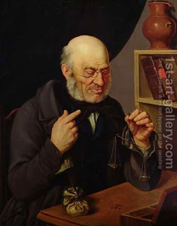

Bava Kamma 84 - An Eye for an Eye Means Monetary Payment
In the school of Rabbi Ishmael they taught, " ...so shall be given upon him... " and there is no giving but money. From here we see that the assailant gives money as payment for the damage.
In the school of Chizkiyah they taught "... an eye for an eye .. and a ... life for a life ..." and not a life and an eye for an eye. If it enters your mind that the payment for blinding someone is losing an actual eye, it could happen that at the time when the court was blinding the assailant he died. This means that an eye for an eye refers to a monetary payment.